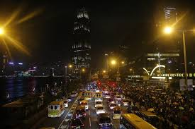
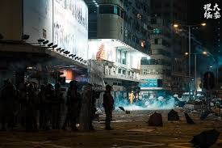

[新頭殼newtalk] 美國參議院才無異議通過《香港人權與民主法案》（Hong Kong Human Rights and Democracy Act）後， 再通過《香港保護法》，禁止出售催淚彈、橡膠子彈、電擊棒與其他鎮壓示威者的裝備給香港警察，參議院民主黨領袖舒默（Chuck Schumer）表示， 美方已經向習近平傳達1項訊息：無論是在香港、中國西北還是在其他任何地方，北京當局對自由的打壓都不會成立。
 